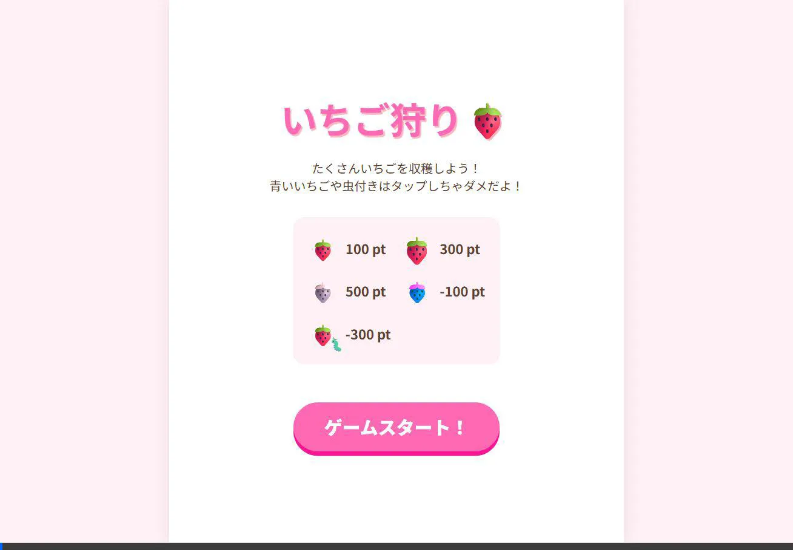
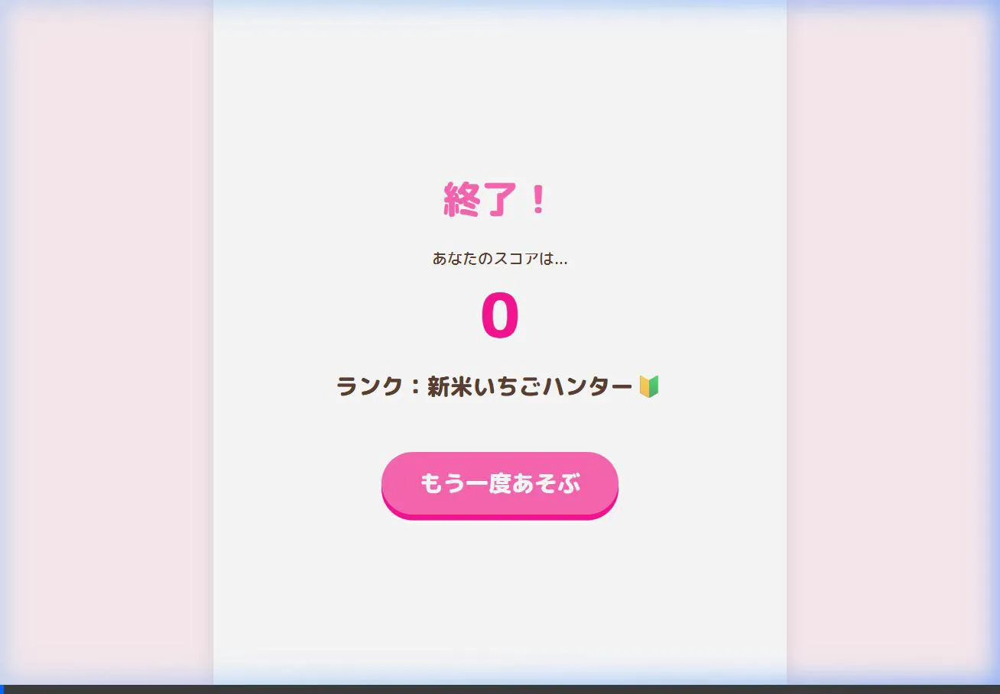

🍓 いちご狩りゲーム 制作レポート
お疲れ様です！ブラウザでサクッと遊べる「いちご狩りゲーム」を作成しました。
今回の制作過程と、私からのリクエスト指示でゲームがどう変化・改善されたかをカジュアルにまとめました！
1. 開発のきっかけと初期の指示（Before）
【AIへの指示（要望）】
「いちご狩りをテーマにしたゲームを作って！30秒のタイムアタックで、レアないちごや、クリックしちゃダメなマイナス要素（青いいちごや虫）も入れてほしい」
まずはゲームとして遊べるようにHTML/CSS/JSのベースを組み上げ、以下の基本ルールを実装しました。
- 制限時間30秒でクリック（タップ）してスコアを稼ぐ
- 普通のいちご（100pt）、大きないちご（300pt）、レアな白いちご（500pt）
- 間違えてクリックすると減点になる青いいちご（-100pt）、虫付きいちご（-300pt）
2. デザインとアニメーションのブラッシュアップ（After）
【AIへの追加指示（改善要望）】
「ベースはOK！次はもっとポップで可愛らしい雰囲気にしたい！
Vanilla CSS（フレームワークなし）を使って、リッチなアニメーションやホバー効果、クリック時のエフェクトを入れて高品質化して！」
初期のシンプルな動作に対して、CSSとJSを調整し、以下の演出を追加しました！一気にゲームらしさが出ました✨
- タイトル画面の強化： タイトルロゴがふわふわと浮き沈みし、ボタンのホバーも気持ちよく動くように変更
- 背景エフェクト： 画面の奥で花びらやキラキラが舞うように、CSSアニメーションとJSで動的生成
- タップ時のフィードバック： いちごを収穫した瞬間に、その場に「✨」が弾け飛ぶパーティクルエフェクトと浮き上がるスコア表示を追加
3. 修正前と修正後の比較（プレイ動画）
アニメーションやエフェクトを追加する前後で、ゲームのプレイ感がどう変わったかを見てみてください！
🌱 Before (基本実装のみ)

状態： 基本機能は動く状態。
いちごはパッと出てパッと消えるだけで、少し無機質でシンプルな印象でした。これでもゲームにはなっていますが、ちょっと寂しいですね。
✨ After (エフェクト追加後)

状態： リッチにブラッシュアップした状態。
タイトルが動き、背景に可愛いパーティクルが舞うように！いちごをクリックした時にキラキラ✨が弾けてスコアが浮かび上がるようになり、触っていて気持ちいいUIになりました！
4. まとめ
AIへのプロンプト（指示出し）次第で、ただの「クリックできる四角形や文字」が、「触って楽しいポップなゲーム」へと数回の指示でブラッシュアップできました。
今後は社内ランキングや難易度調整なんかをつけるとさらに面白くなりそうです！
ぜひ index.html をブラウザで開いて、実際に遊んでみてくださいね！